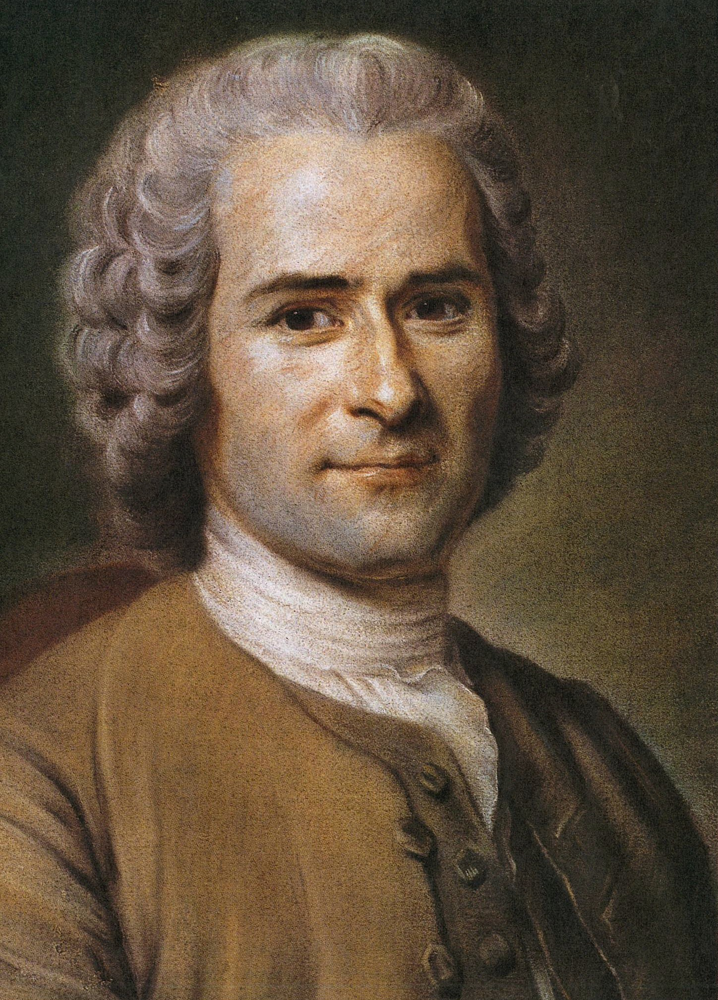

“The first man who, having fenced in a piece of land, said 'This is mine', and found people naïve enough to believe him, that man was the true founder of civil society. From how many crimes, wars, and murders, from how many horrors and misfortunes might not any one have saved mankind, by pulling up the stakes, or filling up the ditch, and crying to his fellows: Beware of listening to this impostor; you are undone if you once forget that the fruits of the earth belong to us all, and the earth itself to nobody.”